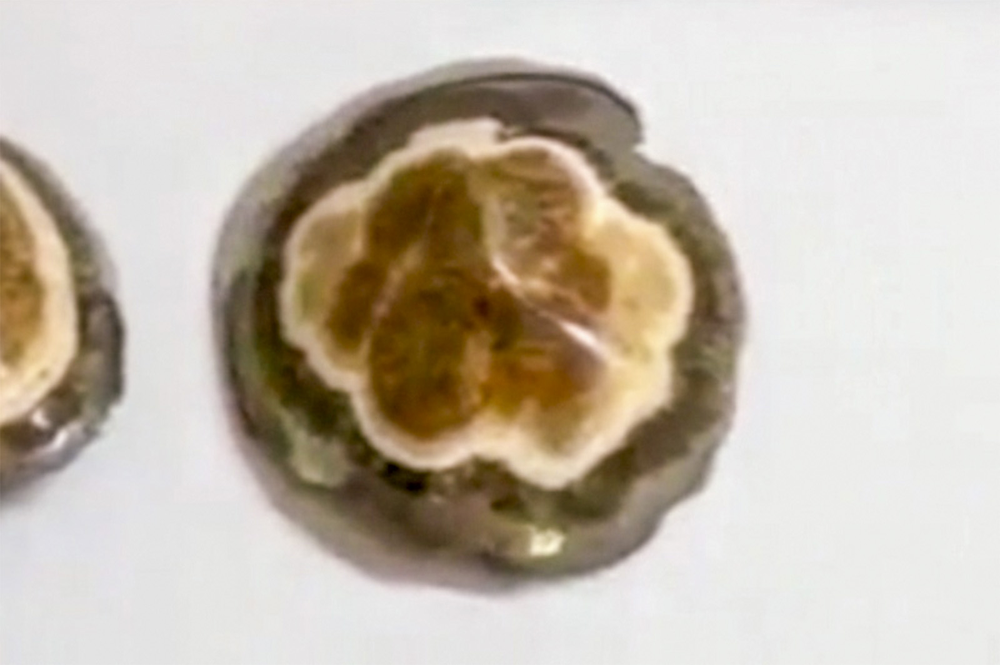

Marcasite
"Barite and Marcasite Nipple"
II-10182
Lubin Główny shafts (Lubin mine), Lubin, Lubin County, Lower Silesian Voivodeship, Poland
Purchased 4/23/2026 from Spirifer Minerals for $25.00
Core Collection • In Collection
Details
Storage Type: Flat
Storage Location: Unassigned
Size class: Miniature (0)
Dimensions: 4.8 × 4.4 × 1.8 cm
Mass: 42.39 g
Luster: Average, Polished